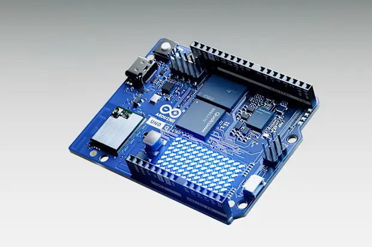
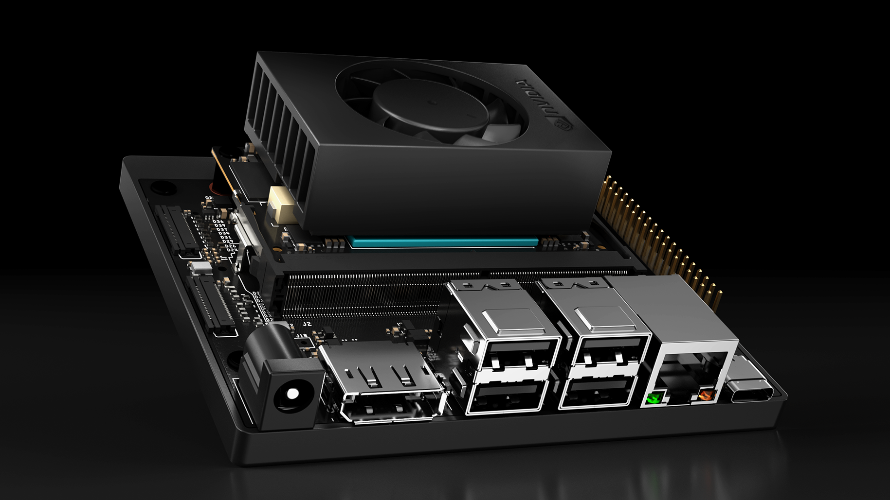
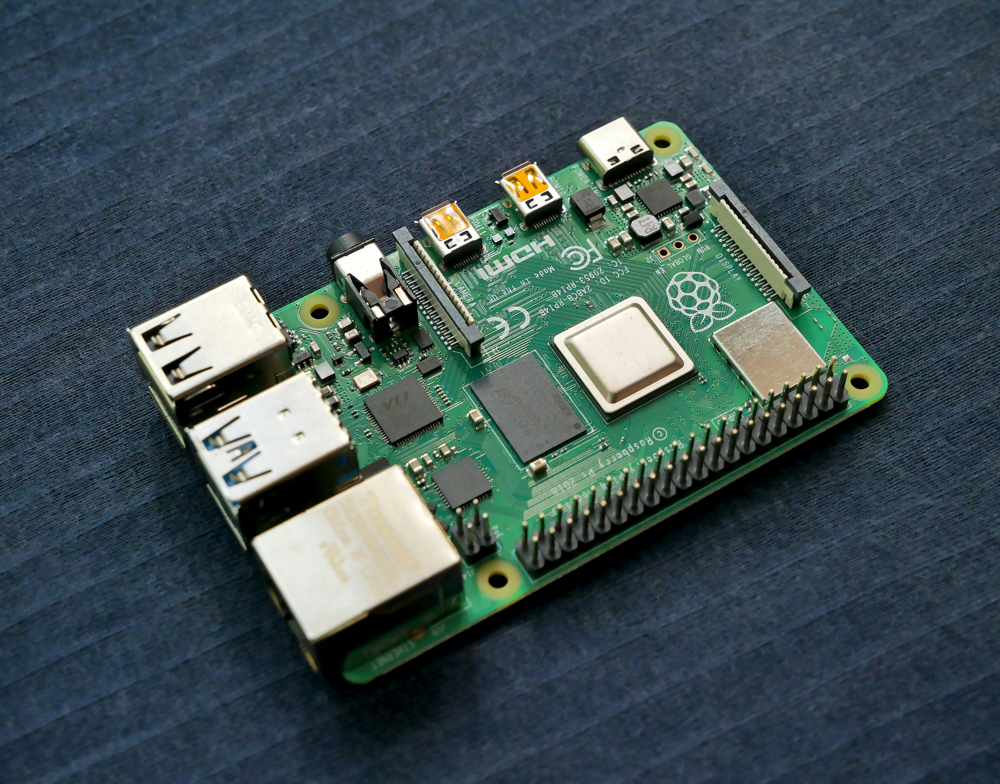
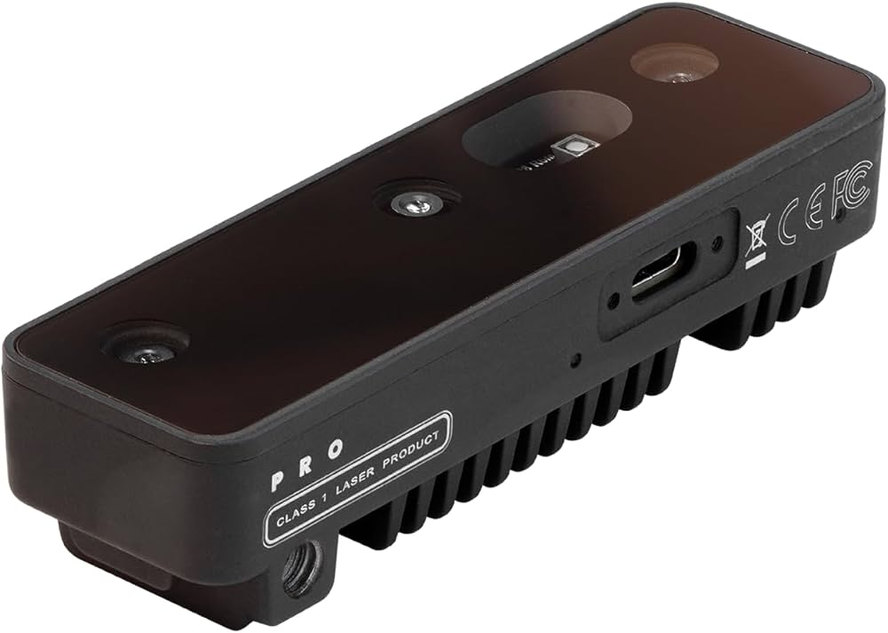

Bridges the Gap Between Theory and Execution
At Robixlo, we stand at the critical intersection of academic innovation and industrial operation. We recognize that breakthrough ideas often falter in the translation phase, which is why we offer flexible, comprehensive engineering services designed for agility.
Whether you represent a university department seeking a rapid-turnaround hardware prototype for a semester project, or an enterprise stakeholder demanding a robust deep-learning infrastructure and high-performance embedded systems, we deliver. We handle the custom design, schematic layout, AI model tuning, and hardware optimization so you can scale rapidly.
Academic Rigor
Deep scientific methodologies applied directly to physical prototypes and numerical calculations.
Industrial Reliability
Battle-tested system architectures prepared for heavy runtimes, hardware scaling, and safety standards.
Rapid Execution
Flexible pipeline execution resulting in accelerated iterations, clean coding structures, and quick turnarounds.
Our Hardware Expertise
We write custom firmware, optimize runtime pipelines, and build production integrations across industry-standard development boards and compute kits.

Arduino Uno
The standard controller for digital prototyping. We write clean, lightweight C++ firmware to manage multi-component sensors, relays, actuation hardware, and low-level communication links.

Jetson Orin Nano
Our absolute go-to for edge deep learning inference. We design and install accelerated software containers utilizing CUDA, TensorRT, and DeepStream SDKs to achieve high frame-rates on site.

Raspberry Pi
The reliable workhorse for Linux IoT nodes. Perfect for data acquisition terminals, edge web portals, server broker nodes, and middle-tier telemetry logging applications.

AMD Xilinx Kria
The heavyweight for custom hardware acceleration. We design bespoke Verilog IP cores and optimize C-based hardware drivers using Vitis and Vivado, delivering maximum edge performance for industrial vision pipelines.

OAK-D Camera
Real-time spatial AI camera depth tracking. We write custom pipeline configurations to process disparity maps, object tracking coordinates, and raw camera vectors directly on-chip.